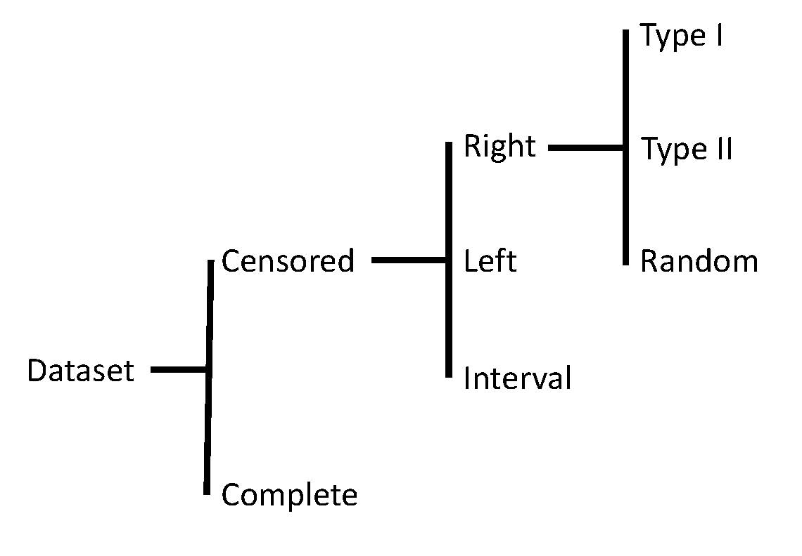
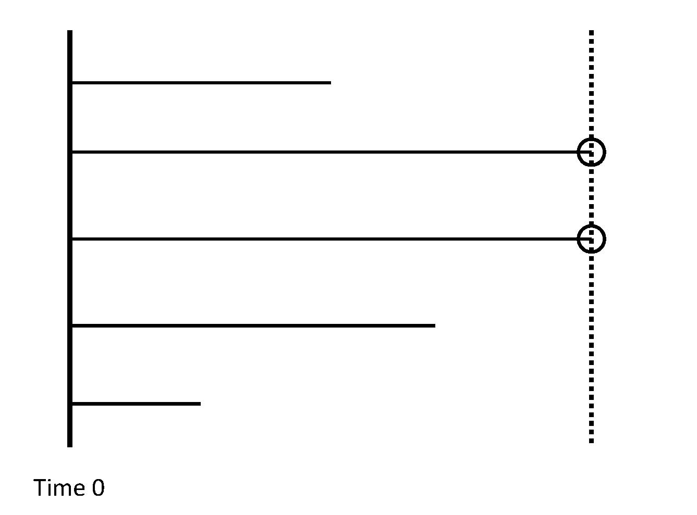
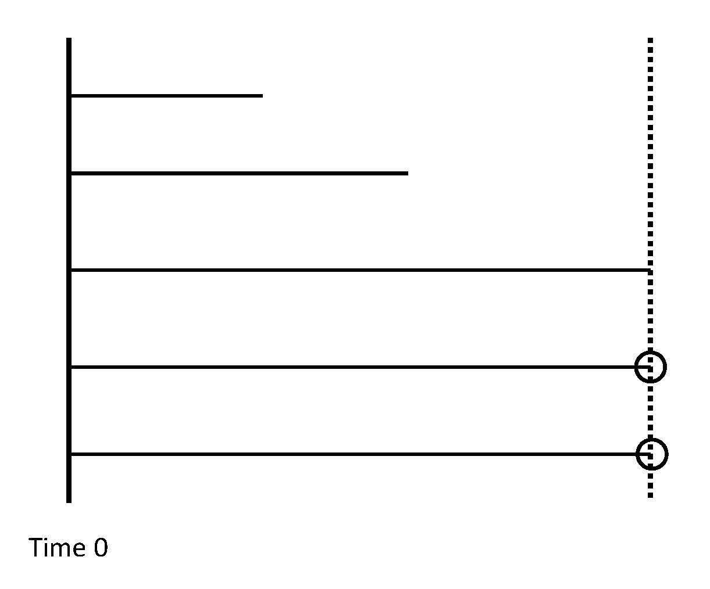
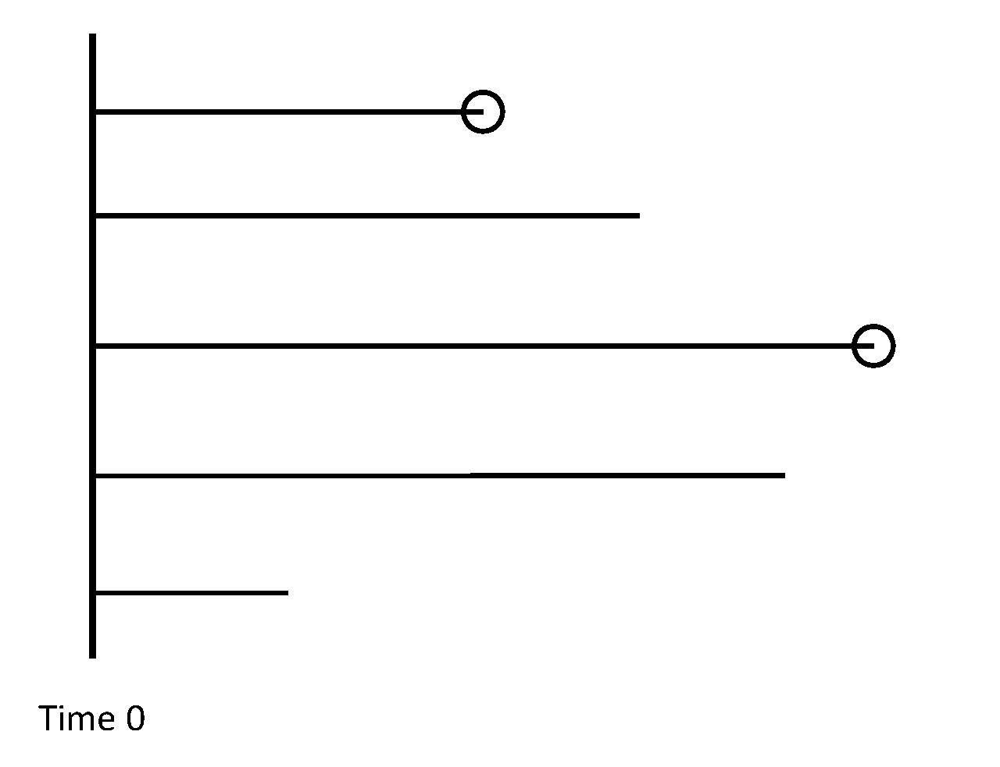
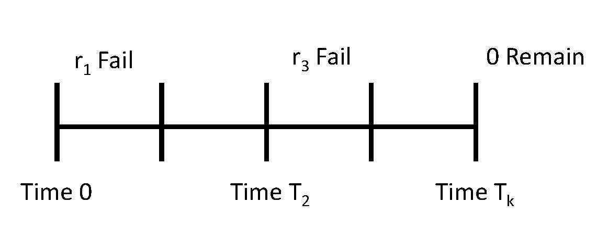

23 Censoring
In an ideal world, survival analysis would not differ from modeling any other quantitative response (in this case, the time to an event). The problem is that we often do not observe the response on a subject prior to the end of the study but instead only have partial information on the response; this phenomena requires additional considerations. Consider the following example.
Example 23.1 (Hypertension) A study was conducted to examine the efficacy of a new anti-hypertensive medication. A cohort of 146 patients with a previous history of heart disease were treated and then followed over the next 10 years. The primary event of interest was death, which was grouped into one year intervals.
As you might imagine, following patients over the span of years can be challenging. Occasionally, subjects are “lost to follow-up.” This can happen for a number of reasons. It could be the subjects withdrew their consent for the study, prohibiting researchers from further contact. As a result, from the time the subject withdrawals from the study, we are no longer able to ascertain whether the subject has experienced the event; all we know is that they were event-free up until the time they withdrew consent. Other subjects might die during the study; however, their cause of death was not the result of hypertension but something unrelated (such as a car accident). Again, we do not get to see when they would have died from the underlying condition but instead only know they were event-free up until they died from these external circumstances. Finally, some patients may remain event-free throughout the entire study; and, at the end of the study are still event-free. We do not get to see when these patients would experience the event; we only know it is after the study. The central question in survival analysis is how to handle such partial information. Excluding the patients from the analysis throws out valuable information and can bias the results. But, pretending to know their event-time adds a certainty not present in the data and will also bias the results.
There are two important issues in biological studies where the primary endpoint of interest is the time to an event:
- The event has not occurred at the time of analysis, resulting in only partial information on the response.
- The length of follow-up varies due to staggered entry into the study.
The second issue listed is not as much of a concern in controlled lab experiments where all subjects can be studied over the same interval of time. However, in larger clinical trials, it takes time to enroll patients, and as a result, they enter the study at different points. Since studies are often funded for a fixed duration, the result is that each patient could potentially be followed for a different length of time. In order to address this, we often “start the clock” when a subject enters the study and think in terms of patient time (instead of time since birth, for example). Since entry into the study often involves a treatment at some point, it can be helpful to use this as a reference point.
The time at which a patient enters a study is often referred to as “baseline;” in survival analysis, this is also generally the point we think of as time \(t = 0\).
The first issue is a larger concern known as censoring.
Definition 23.1 (Censored Data) Censored data is a special case of missing data for which a bound on the missing value is known. In survival analysis, the response of interest (time to an event) is subject to censoring.
Censoring is not the same as “missing data” in the literature. With censoring, we have partial information regarding the value that is unobserved.
It is often impossible or impractical to observe the time to an event on all subjects. There are three primary causes for censoring, which we illustrated in the above discussion of Example 23.1:
- End of the study; common in clinical trials, resulting from both staggered entry into the study and financial constraints preventing indefinite follow-up. At the end of the study, all subjects who have not experienced the event are censored.
- “Lost to follow-up,” which is common in studies involving human subjects. Living subjects, especially humans, do not always behave as you expect. As an example, humans can change their mind about participating in a study and withdraw consent.
- Competing risks. This is an outcome that prevents observing the event of interest, which is common with ill patients. As an example, a cancer patient may die preventing our ability to observe if they experience a heart attack (the endpoint of interest).
While many scenarios may result in censored data, we can construct a taxonomy of types of censoring (Figure 23.1).

In order to illustrate the various types of censoring, we consider variations on the design of the Carcinogen example from the previous chapter (Example 22.1). First, consider a study design in which a sample of \(n\) rats are exposed at the same time point. The rats are followed for a period of two weeks, at which point the study is ended. This design emphasizes a situation in which the duration of the study is the primary constraint. If all rats develop a tumor during this two-week period, then the data set is complete.
Definition 23.2 (Complete Data) This term describes a data set for which the event is observed on all subjects.
When the data is complete, survival analysis reduces to a standard estimation problem that could be addressed using methods previously described in this text.
Suppose, however, that some rats remain tumor-free at the end of the studied (Figure 23.2). These rats are censored. Since all rats began the study at the same point in time, any observation censored is censored at the same time point. In this case, we only know that the time until the rat develops the tumor is at least two weeks.

Definition 23.3 (Right Censoring) Right censoring refers to scenarios when a lower bound is known on the response.
Definition 23.4 (Type I Censoring) Type-I censoring is a form of right censoring where the only source of censoring is the end of the study, for which the duration was pre-determined. Therefore, the time at which subjects are censored is the pre-determined study duration.
In this study, the number of rats that remain tumor-free is random, and out of the control of the researchers. We contrast that with a design that says that each of the \(n\) rats is exposed at the same time and the study continues until the first \(r\) rats develop a tumor (where \(r\) is chosen ahead of time). In this case, the length of the study is random. This study design might be chosen when running the study itself is cheap once the subjects are obtained; it ensures an adequate number of events to power the study. All rats remaining tumor-free past the \(r\)-th rat will be censored (Figure 23.3).

Definition 23.5 (Type II Censoring) Type-II censoring is a form of right censoring where the only source of censoring is the end of the study, which is determined when the \(r\)-th event occurs and \(r\) is pre-determined. Therefore, the time at which subjects are censored is determined by the \(r\)-th event.
Type I and Type II censoring tend to occur in controlled settings; in large-scale clinical trials involving human subjects, the source of censoring cannot be controlled. For example, suppose the particular breed of rat being studied is difficult to obtain. As a result, we are unable to obtain the \(n\) rats at the same time. Instead, each rat is obtained as it becomes available; the rat is then exposed to the carcinogen and followed for as long as possible (until it develops a tumor or the study ends). The study will end two months after obtaining the first rat. This design results in staggered entry into the study, which as described above can be accounted for by thinking of “time” as “time since exposure” instead of “time since study began.” Many rats will experience the event. Others will not experience the event at the time the study ends. However, the length of time between entering the study and the study ending differs across those rats which are censored (as some of those rats entered the study earlier than others). Further, it is possible some rats are censored prior to the end of the study because they experience organ failure and die prior to the development of a tumor. The key observation is that the censoring times may differ for each rat (see Figure 23.4).

Definition 23.6 (Random Censoring) Random censoring is a form of right censoring when subjects are withdrawn from the study at any time. It is typically assumed that the event time and the censoring time are independent of one another.
The assumption of independence between the censoring and event times is important. If only the healthiest patients are censored, then it is difficult to estimate the survival probability correctly; we assume the reason each patient is censored has nothing to do with their underlying survival. This is fundamentally different than Type I or Type II censoring where the healthiest subjects are those that are censored. By far, the most common type of censoring is random right censoring.
In each of the above cases, a lower bound was known on the event time, but there are other possibilities. Suppose the sample of \(n\) rats were exposed to the carcinogen at the same moment; however, this occurred at an off-site location. The rats are then transported to the lab, which takes several days. Upon arrival, it is discovered that \(m\) rats have already developed a tumor. For these rats, an upper bound is known on the event time.
Definition 23.7 (Left Censoring) Left censoring refers to scenarios when an upper bound is known on the response.
Finally, we consider the case in which the \(n\) rats are exposed to a carcinogen; the rats are assessed once weekly to determine if a tumor has developed. At the end of each week, the number who have developed a tumor is noted (Figure 23.5). As a result, we do not know the exact day on which the tumor developed; we only know it occurred sometime within the last week. This creates both an upper and lower bound on the event time.

Definition 23.8 (Interval Censoring) Interval censoring refers to scenarios when the event time is known to have occurred within some interval, but the exact time is unknown.
Interval censoring results when only periodic assessment can be performed. Of course, it is impossible to measure an event time with infinite precision; therefore, it would seem all events are interval censored. In practice, we consider interval censoring to occur when the interval is larger than the smallest unit of time we would like to consider. For example, suppose for Example 22.1, we are interested in the number of days until the rat develops a tumor. In that case, daily assessments on the rats, while periodic, would not result in interval censoring; however, weekly assessments would. In contrast, if we were interested in the number of hours until the rat develops a tumor, daily assessments would result in interval censoring.
Regardless of the type of censoring, it cannot be ignored. Due to censoring, we do not observe the survival time on all subjects, and this impacts the likelihood (Definition 18.2). Consider the case of right censoring; in that case, we observe the smaller of the survival time and the censoring time on each subject. We also are able to note whether our observation was the survival time or the censoring time. These together give us information about the response.
Definition 23.9 (Event Time and Censoring Indicator) Let \(T_i\) and \(C_i\) represent the survival time and the censoring time for the \(i\)-th subject. When data is subject to right censoring, we observe
\[X_i = \min\left\{T_i, C_i\right\}\]
which is known as the event time. We also observe whether this observation was triggered by the actual event or censoring:
\[\delta_i = \begin{cases} 1 & \text{if } T_i \leq C_i \\ 0 & \text{if } T_i > C_i. \end{cases}\]
This is known as the censoring indicator.
Note that counter-intuitively, the “censoring indicator” actually indicates when the survival time is observed, not when an event is censored.
Any analysis of survival data must account for the survival times and the censoring times; however, neither is directly observed on all subjects. As a result, standard methods are not applicable.